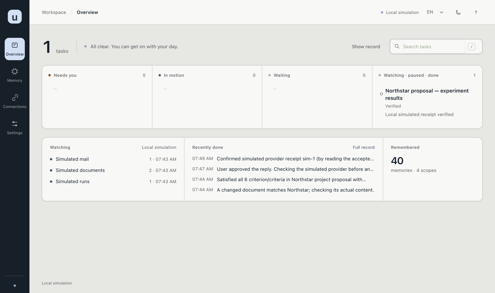

Unprompted is a local-first prototype. It watches sources you authorize, notices work that was not assigned as a prompt, checks the evidence, and prepares the next step. You review the result. External actions stay behind an approval or a separate permission.
This site matches the current main branch, version 0.3.0. It is for someone running the app, and for someone changing the code or calling the local API.
What it does
authorized source → observed change → evidence check → prepared work
→ your decision → external action, if permitted → readback- Sources supply the work. A local folder needs no cloud account. Google, GitHub, Outlook, Slack, and Notion use your own account.
- The model interprets requests. It cannot grant a permission or mark work complete.
- The workspace shows what needs you, what is moving, and what is waiting.
- Permissions start read-only. Sending, drafts, document edits, and other writes are separate.

Current limits
The app is one person, one machine, one process. It binds to 127.0.0.1 and has no login. OAuth tokens, model keys, and connector credentials are encrypted at rest. The workspace database that holds synced mail and documents is not. A source starts read-only. Sending, drafts, and other writes stay off until you grant them. Permissions and privacy states the boundary. Connectors states what each source can do.
Normal startup does not insert sample tasks. npm run demo is a separate disposable simulation. It does not use saved accounts.
Where to go
- Install and first run —
npm ci --include=optional, thennpm start. - Models — endpoint, model ID, and an optional API key.
- Connectors — local folders, Apple Notes, Google, GitHub, Outlook, Slack, Notion, and MCP.
- Workspace — Overview, Memory, Connections, and Settings.
- Automatic follow-up — a lease you start, which still cannot skip a check.
- Local API — the localhost HTTP surface.
- Development and testing — the commands used to check a change.
- Contributing — reports, pull requests, and the checks a change needs.
Also on this site: Keyboard shortcuts, FAQ, Glossary, Changelog, and Security.
Improvements are welcome
If the product falls short, say so. Interface and frontend work, small bugs, mistakes in these pages, and new features are all welcome. A short note is enough. No invitation is required, and English or Chinese both work. Contributing is how to report it or send the change.